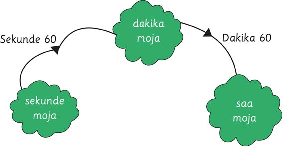

Sura ya Sita
Vipimo vya muda
Vipimo vya muda
Muda hupimwa kwa sekunde, dakika, saa, siku, wiki, mwezi au mwaka. Uhusiano wa vipimo vya muda ni kama ifuatavyo:
(a)
Dakika moja ina sekunde 60.
(b)
Saa moja ina dakika 60.
(c)
Siku moja ina saa 24.
(d)
Wiki moja ina siku 7.
(e)
Mwaka mmoja una miezi 12.
